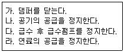

에너지관리기능사 (2015-01-25 기출문제)
1과목: 임의 구분
1. 증발량 3500kgf/h인 보일러의 증기 엔탈피가 640kcal/kg이고, 급수의 온도는 20℃이다. 이 보일러의 상당 증발량은 얼마인가?
- 약 3786kgf/h
- 약 4156kgf/h
- 약 2760kgf/h
- 약 4026kgf/h
(정답률: 57%)
2. 액체 연료 연소장치에서 보염장치(공기조절장치)의 구성 요소가 아닌 것은?
- 바람상자
- 보염기
- 버너 팁
- 버너타일
(정답률: 65%)

3. 보일러의 상당증발량을 옳게 설명한 것은?
- 일정 온도의 보일러수가 최종의 증발상태에서 증기가 되었을 때의 중량
- 시간당 증발된 보일러수의 중량
- 보일러에서 단위시간에 발생하는 증기 또는 온수의 보유열량
- 시간당 실제증발량이 흡수한 전열량을 온도 100℃의 포화수를 100℃의 증기로 바꿀 때의 열량으로 나눈 값
(정답률: 74%)
4. 안전밸브의 종류가 아닌 것은?
- 레버 안전밸브
- 추 안전밸브
- 스프링 안전밸브
- 핀 안전밸브
(정답률: 68%)
5. 증기보일러의 압력계 부착에 대한 설명으로 틀린 것은?
- 압력계와 연결된 관의 크기는 강관을 사용할 때에는 안지름이 6.5㎜ 이상 이어야 한다.
- 압력계는 눈금판의 눈금이 잘 보이는 위치에 부착하고 얼지 않도록 하여야 한다.
- 압력계는 사이폰관 또는 동등한 작용을 하는 장치가 부착되어야 한다.
- 압력계의 콕크는 그 핸들을 수직인 관과 동일방향에 놓은 경우에 열려 있는 것이어야 한다.
(정답률: 71%)
6. 육용 보일러 열 정산의 조건과 관련된 설명 중 틀린 것은?
- 전기 에너지는 1kW당 860kcal/h로 환산한다.
- 보일러 효율 산정 방식은 입출열법과 열 손실법으로 실시한다.
- 열 정산 시험시의 연료 단위량은 액체 및 고체연료의 경우 1kg에 대하여 열 정산을 한다.
- 보일러의 열 정산은 원칙적으로 정격 부하 이하에서 정상 상태로 3시간 이상의 운전 결과에 따라 한다.
(정답률: 84%)
7. 보일러 본체에서 수부가 클 경우의 설명으로 틀린 것은?
- 부하 변동에 대한 압력 변화가 크다.
- 증기 발생시간이 길어진다.
- 열효율이 낮아진다.
- 보유 수량이 많으므로 파열시 피해가 크다.
(정답률: 59%)
8. 분진가스를 방해판 등에 충돌시키거나 급격한 방향전환 등에 의해 매연을 분리 포집하는 집진방법은?
- 중력식
- 여과식
- 관성력식
- 유수식
(정답률: 79%)
9. 보일러에 사용되는 열교환기 중 배기가스의 폐열을 이용하는 교환기가 아닌 것은?
- 절탄기
- 공기예열기
- 방열기
- 과열기
(정답률: 71%)
10. 수관식 보일러의 일반적인 특징에 관한 설명으로 틀린 것은?
- 구조상 고압 대용량에 적합하다.
- 전열면적을 크게 할 수 있으므로 일반적으로 열효율이 좋다.
- 부하변동에 따른 압력이나 수위의 변동이 적으므로 제어가 편리하다.
- 급수 및 보일러수 처리에 주의가 필요하며 특히 고압보일러에서는 엄격한 수질관리가 필요하다.
(정답률: 65%)
11. 보일러 피드백제어에서 동작신호를 받아 규정된 동작을 하기 위해 조작신호를 만들어 조작부에 보내는 부분은?
- 조절부
- 제어부
- 비교부
- 검출부
(정답률: 73%)
12. 다음 중 수관식 보일러에 속하는 것은?
- 기관차 보일러
- 코르니쉬 보일러
- 다쿠마 보일러
- 랑카샤 보일러
(정답률: 79%)
13. 게이지 압력이 1.57MPa이고 대기압이 0.103MPa일 때 절대압력은 몇 MPa인가?
- 1.467
- 1.673
- 1.783
- 2.008
(정답률: 76%)
14. 매시간 1500kg의 연료를 연소시켜서 시간당 11000kg의 증기를 발생시키는 보일러의 효율은 몇 % 인가? (단, 연료의 발열량은 6000kcal/kg, 발생증기의 엔탈피는 742kcal/kg, 급수의 엔탈피는 20kcal/kg이다.)
- 88%
- 80%
- 78%
- 70%
(정답률: 53%)
15. 연소용 공기를 노의 앞에서 불어 넣으므로 공기가 차고 깨끗하며 송풍기의 고장이 적고 점검 수리가 용이한 보일러의 강제통풍 방식은?
- 압입통풍
- 흡입통풍
- 자연통풍
- 수직통풍
(정답률: 74%)
16. 가스용 보일러의 연소방식 중에서 연료와 공기를 각각 연소실에 공급하여 연소실에서 연료와 공기가 혼합되면서 연소하는 방식은?
- 확산연소식
- 예혼합연소식
- 복열혼합연소식
- 부분예혼합연소식
(정답률: 59%)
17. 액화석유가스(LPG)의 특징에 대한 설명 중 틀린 것은?
- 유황분이 없으며 유독성분도 없다.
- 공기보다 비중이 무거워 누설 시 낮은 곳에 고여 인화 및 폭발성이 크다.
- 연소 시 액화천연가스(LNG)보다 소량의 공기로 연소한다.
- 발열량이 크고 저장이 용이하다.
(정답률: 63%)
18. 액면계 중 직접식 액면계에 속하는 것은?
- 압력식
- 방사선식
- 초음파식
- 유리관식
(정답률: 73%)
19. 분출밸브의 최고사용압력은 보일러 최고사용압력의 몇 배 이상이어야 하는가?
- 0.5배
- 1.0배
- 1.25배
- 2.0배
(정답률: 68%)
20. 증기 또는 온수 보일러로써 여러 개의 섹션(section)을 조합하여 제작하는 보일러는?
- 열매체 보일러
- 강철제 보일러
- 관류 보일러
- 주철제 보일러
(정답률: 72%)
2과목: 임의 구분
21. 증기난방시공에서 관말 증기 트랩 장치의 냉각래그(cooling leg) 길이는 일반적으로 몇 m 이상으로 해주어야 하는가?
- 0.7m
- 1.0m
- 1.5m
- 2.5m
(정답률: 78%)
22. 드럼 없이 초임계압력 하에서 증기를 발생시키는 강제순환 보일러는?
- 특수 열매체 보일러
- 2중 증발 보일러
- 연관 보일러
- 관류 보일러
(정답률: 74%)
23. 연료유 탱크에 가열장치를 설치한 경우에 대한 설명으로 틀린 것은?
- 열원에는 증기, 온수, 전기 등을 사용한다.
- 전열식 가열장치에 있어서도 직접식 또는 저항밀봉피복식의 구조로 한다.
- 온수, 증기 등의 열매체가 동절기에 동결할 우려가 있는 경우에는 동결을 방지하는 조치를 취해야 한다.
- 연료유 탱크의 기름 취출구 등에 온도계를 설치하여야 한다.
(정답률: 59%)
24. 보일러 급수예열기를 사용할 때의 장점을 설명한 것으로 틀린 것은?
- 보일러의 증발능력이 향상된다.
- 급수 중 불순물의 일부가 제거된다.
- 증기의 건도가 향상된다.
- 급수와 보일러수와의 온도 차이가 적어 열응력 발생을 방지한다.
(정답률: 50%)
25. 보일러 연료 중에서 고체연료를 원소 분석하였을 때 일반적인 주성분은? (단, 중량 %를 기준으로 한 주성분을 구한다.)
- 탄소
- 산소
- 수소
- 질소
(정답률: 80%)
26. 보일러 자동제어 신호전달 방식 중 공기압 신호전송의 특징 설명으로 틀린 것은?
- 배관이 용이하고 보존이 비교적 쉽다.
- 내열성이 우수하나 압축성이므로 신호전달에 지연된다.
- 신호전달 거리가 100~150m 정도이다.
- 온도제어 등에 부적합하고 위험이 크다.
(정답률: 66%)
27. 증기의 압력을 높일 때 변하는 현상으로 틀린 것은?
- 현열이 증대한다.
- 증발 잠열이 증대한다.
- 증기의 비체적이 증대한다.
- 포화수 온도가 높아진다.
(정답률: 54%)
28. 보일러 자동제어의 급수제어(F.W.C)에서 조작량은?
- 공기량
- 연료량
- 전열량
- 급수량
(정답률: 85%)
29. 물의 임계압력은 약 몇 kgf/cm2인가?
- 175.23
- 225.65
- 374.15
- 539.75
(정답률: 67%)
30. 경납땜의 종류가 아닌 것은?
- 황동납
- 인동납
- 은납
- 주석-납
(정답률: 72%)
31. 보일러에서 발생한 증기 또는 온수를 건물의 각 실내에 설치된 방열기에 보내어 난방하는 방식은?
- 복사난방법
- 간접난방법
- 온풍난방법
- 직접난방법
(정답률: 63%)
32. 보일러수 중에 함유된 산소에 의해서 생기는 부식의 형태는?
- 점식
- 가성취화
- 그루빙
- 전면부식
(정답률: 65%)
33. 보일러 사고의 원인 중 취급상의 원인이 아닌 것은?
- 부속장치 미비
- 최고 사용압력의 초과
- 저수위로 인한 보일러의 과열
- 습기나 연소가스 속의 부식성 가스로 인한 외부부식
(정답률: 81%)
34. 보일러 점화 시 역화가 발생하는 경우와 가장 거리가 먼 것은?
- 댐퍼를 너무 조인 경우나 흡입통풍이 부족할 경우
- 적정공기비로 점화한 경우
- 공기보다 먼저 연료를 공급했을 경우
- 점화할 때 착화가 늦어졌을 경우
(정답률: 76%)
35. 온수난방 배관 시공법에 대한 설명 중 틀린 것은?
- 배관구배는 일반적으로 1/250 이상으로 한다.
- 배관 중에 공기가 모이지 않게 배관한다.
- 온수관의 수평배관에서 관경을 바꿀 때는 편심이음쇠를 사용한다.
- 지관이 주관 아래로 분기될 때는 90° 이상으로 끝올림 구배로 한다.
(정답률: 68%)
36. 방열기내 온수의 평균온도 80℃, 실내온도 18℃, 방열계수 7.2kcal/m2·h·℃ 일때 방열기의 방열량은 얼마인가?
- 346.4kcal/m2·h
- 446.4kcal/m2·h
- 519kcal/m2·h
- 560kcal/m2·h
(정답률: 67%)
37. 배관의 이동 및 회전을 방지하기 위해 지지점 위치에 완전히 고정시키는 장치는?
- 앵커
- 써포트
- 브레이스
- 행거
(정답률: 71%)
38. 보일러 산세정의 순서로 옳은 것은?
- 전처리→산액처리→수세→중화방청→수세
- 전처리→수세→산액처리→수세→중화방청
- 산액처리→수세→전처리→중화방청→수세
- 산액처리→전처리→수세→중화방청→수세
(정답률: 79%)
39. 땅속 또는 지상에 배관하여 압력 상태 또는 무압력 상태에서 물의 수송 등에 주로 사용되는 덕 타일 주철관을 무엇이라 부르는가?
- 회주철관
- 구상흑연 주철관
- 모르타르 주철관
- 사형 주철관
(정답률: 70%)
40. 보일러 과열의 요인 중 하나인 저수위의 발생 원인으로 거리가 먼 것은?
- 분출밸브의 이상으로 보일러수가 누설
- 급수장치가 증발능력에 비해 과소한 경우
- 증기 토출량에 과소한 경우
- 수면계의 막힘이나 고장
(정답률: 63%)
3과목: 임의 구분
41. 보일러의 설치·시공기준 상 가스용 보일러의 연료 배관 시 배관의 이음부와 전기계량기 및 전기개폐기와의 유지 거리는 얼마인가? (단, 용접이음매는 제외한다.)
- 15㎝ 이상
- 30㎝ 이상
- 45㎝ 이상
- 60㎝ 이상
(정답률: 57%)
42. 다음 보온재 중 안전사용온도가 가장 높은 것은?
- 펠트
- 암면
- 글라스울
- 세라믹 화이버
(정답률: 72%)
43. 동관 끝을 원형으로 정형하기 위해 사용하는 공구는?
- 사이징 툴
- 익스팬더
- 리머
- 튜브벤더
(정답률: 76%)
44. 어떤 건물의 소요 난방부하가 45000kcal/h이다. 주철제 방열기로 증기난방을 한다면 약 몇 쪽(section)의 방열기를 설치해야 하는가? (단, 표준방열량으로 계산하며, 주철제 방열기의 쪽당 방열면적은 0.24m2이다.)
- 156쪽
- 254쪽
- 289쪽
- 315쪽
(정답률: 59%)
45. 단열재를 사용하여 얻을 수 있는 효과에 해당하지 않는 것은?
- 축열용량이 작아진다.
- 열전도율이이 작아진다.
- 노 내의 온도분포가 균일하게 된다.
- 스풀링 현상을 증가시킨다.
(정답률: 68%)
46. 증기난방방식을 응축수환수법에 의해 분류하였을 때 해당되지 않는 것은?
- 중력환수식
- 고압환수식
- 기계환수식
- 진공환수식
(정답률: 59%)
47. 보일러의 계속사용검사기준에서 사용 중 검사에 대한 설명으로 거리가 먼 것은?
- 보일러 지지대의 균열, 내려앉음, 지지부재의 변형 또는 파손 등 보일러의 설치상태에 이상이 없어야 한다.
- 보일러와 접속된 배관, 밸브 등 각종 이음부에는 누기, 누수가 없어야 한다.
- 연소실 내부가 충분히 청소된 상태이어야 하고, 축로의 변형 및 이탈이 없어야 한다.
- 보일러 동체는 보온 및 케이싱이 분해되어 있어야 하며, 손상이 약간 있는 것은 사용해도 관계가 없다.
(정답률: 87%)
48. 보일러 운전정지의 순서를 바르게 나열한 것은?

- 가 → 나 → 다 → 라
- 가 → 라 → 나 → 다
- 라 → 가 → 나 → 다
- 라 → 나 → 다 → 가
(정답률: 83%)
49. 보일러 점화 전 자동제어장치의 점검에 대한 설명이 아닌 것은?
- 수위를 올리고 내려서 수위검출기 기능을 시험하고, 설정된 수위 상한 및 하한에서 정확하게 급수펌프가 기동, 정지하는지 확인한다.
- 저수탱크 내의 저수량을 점검하고 충분한 수량인 것을 확인한다.
- 저수위경보기가 정상작동 하는 것을 확인한다.
- 인터록계통의 제한기는 이상 없는지 확인한다.
(정답률: 46%)
50. 상용 보일러의 점화전 준비사항과 관련이 없는 것은?
- 압력계 지침의 위치를 점검한다.
- 분출밸브 및 분출콕크를 조작해서 그 기능이 정상인지 확인한다.
- 연소장치에서 연료배관, 연료펌프 등의 개폐상태를 확인한다.
- 연료의 발열량을 확인하고, 성분을 점검한다.
(정답률: 73%)
51. 주철제 방열기를 설치할 때 벽과의 간격은 약 몇 ㎜ 정도로 하는 것이 좋은가?
- 10~30
- 50~60
- 70~80
- 90~100
(정답률: 82%)
52. 보일러수 속에 유지류, 부유물 등의 농도가 높아지면 드럼수면에 거품이 발생하고, 또한 거품이 증가하여 드럼의 증기실에 확대되는 현상은?
- 포밍
- 프라이밍
- 워터 해머링
- 프리퍼지
(정답률: 80%)
53. 보일러에서 라미네이션(lamination)이란?
- 보일러 본체나 수관 등이 사용 중에 내부에서 2장의 층을 형성한 것
- 보일러 강판이 화염에 닿아 불룩 튀어 나온 것
- 보일러 동에 작용하는 응력의 불균일로 동의 일부가 함몰된 것
- 보일러 강판이 화염에 접촉하여 점식된 것
(정답률: 83%)
54. 벨로즈형 신축이음쇠에 대한 설명으로 틀린 것은?
- 설치 공간을 넓게 차지하지 않는다.
- 고온, 고압 배관의 옥내배관에 적당하다.
- 일명 팩레스(pack less)신축이음쇠 라고도 한다.
- 벨로즈는 부식되지 않는 스테인리스, 청동 제품 등을 사용한다.
(정답률: 58%)
55. 에너지이용합리화법상 에너지를 사용하여 만드는 제품의 단위당 에너지사용목표량 또는 건축물의 단위면적당 에너지사용목표량을 정하여 고시하는 자는?
- 산업통상자원부장관
- 에너지관리공단 이사장
- 시·도지사
- 고용노동부장관
(정답률: 69%)
56. 에너지다소비사업자가 매년 1월 31일까지 신고해야 할 사항에 포함되지 않는 것은?
- 전년도의 분기별 에너지사용량·제품생산량
- 해당 연도의 분기별 에너지사용예정량·제품생산예정량
- 에너지사용기자재의 현황
- 전년도의 분기별 에너지 절감량
(정답률: 46%)
57. 정부는 국가전략을 효율적·체계적으로 이행하기 위하여 몇 년마다 저탄소 녹색성장 국가전략 5개년 계획을 수립하는가?
- 2년
- 3년
- 4년
- 5년
(정답률: 84%)
58. 에너지이용합리화법에서 정한 검사에 합격 되지 아니한 검사대상기기를 사용한 자에 대한 벌칙은?
- 1년 이하의 징역 또는 1천만 원 이하의 벌금
- 2년 이하의 징역 또는 2천만 원 이하의 벌금
- 3년 이하의 징역 또는 3천만 원 이하의 벌금
- 4년 이하의 징역 또는 4천만 원 이하의 벌금
(정답률: 83%)
59. 에너지이용 합리화법상 대기전력경고표지를 하지 아니한 자에 대한 벌칙은?
- 2년 이하의 징역 또는 2천만 원 이하의 벌금
- 1년 이하의 징역 또는 1천만 원 이하의 벌금
- 5백만 원 이하의 벌금
- 1천만 원 이하의 벌금
(정답률: 56%)
60. 신에너지 및 재생에너지 개발·이용·보급·촉진법에 따라 건축물인증기관으로부터 건축물인증을 받지 아니하고 건축물인증의 표시 또는 이와 유사한 표시를 하거나 건축물인증을 받은 것으로 홍보한 자에 대해 부과하는 과태료 기준으로 맞는 것은?
- 5백만 원 이하의 과태료 부과
- 1천만 원 이하의 과태료 부과
- 2천만 원 이하의 과태료 부과
- 3천만 원 이하의 과태료 부과
(정답률: 67%)